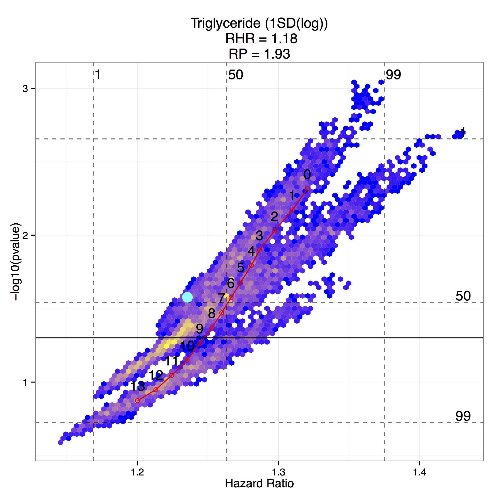
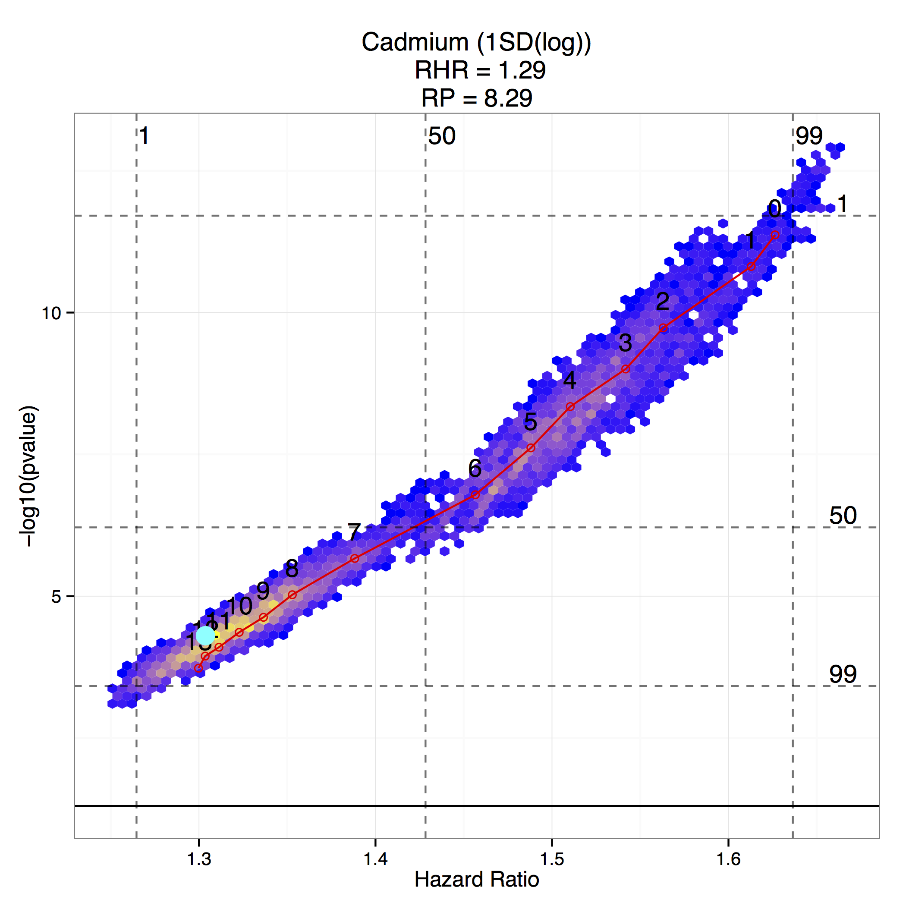

Vibration of Effects (VoE)
The VoE is an empirical estimation of the distribution of effect sizes and p-values due to model selection.
-
For code to run the VoE, visit our GitHub repository: http://github.com/chiragjp/voe
-
Estimates, tables, and figures of the VoE for 417 risk factors for all-cause mortality recently produced in our Primer, are here
Questions? Contact us: